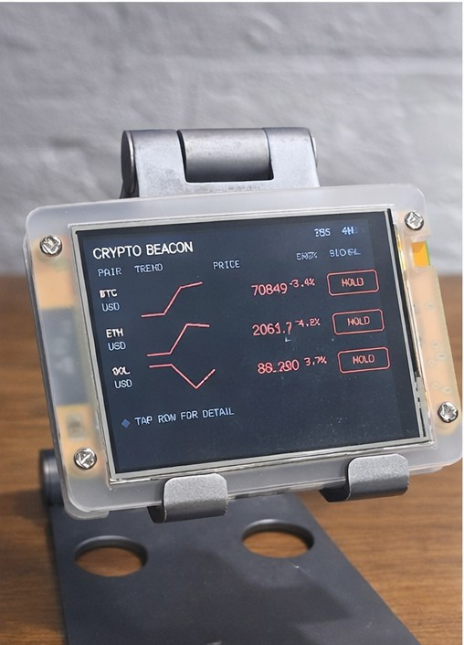
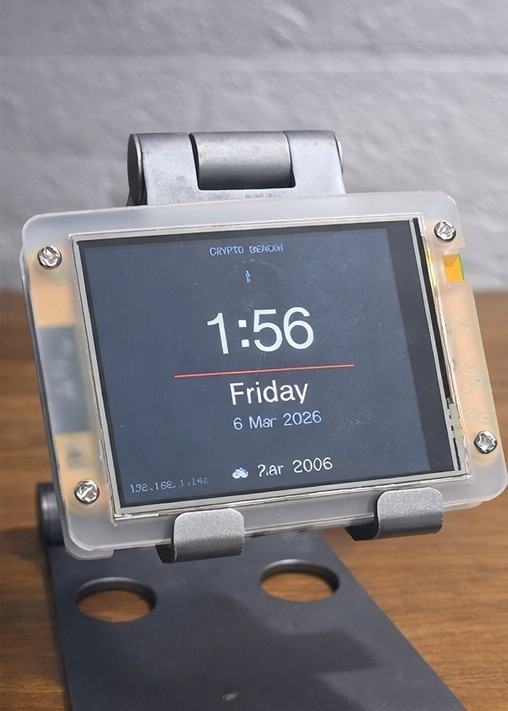
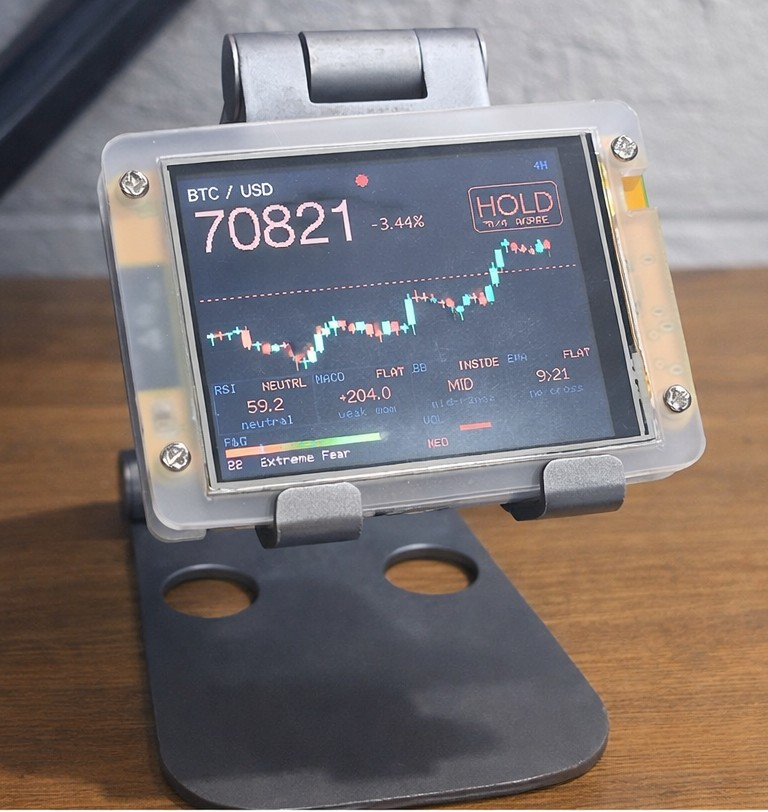

CryptoBeacon
Your always-on crypto command center. Track up to 5 coins with live prices, candlestick charts, and key technical indicators — all on one dedicated display.
What is CryptoBeacon?
CryptoBeacon is a dedicated Wi-Fi connected display built for crypto traders who want market awareness without constantly checking their phone or switching browser tabs. Select up to 5 cryptocurrencies, set it on your desk, and let it do the watching for you.
It cycles through your chosen coins automatically, showing everything you need to make informed decisions at a glance — price, chart, and the indicators that matter most.
Screen Modes
Overview Screen
The overview screen shows all your selected coins side-by-side — current price, 24-hour change, and a mini trend line for each. A quick glance tells you where the market stands right now.
Per-Coin Detail View
Cycle through each coin to see its full detail screen. Every coin gets its own view with a candlestick chart and the full suite of technical indicators displayed clearly.
Candlestick Chart
A live candlestick chart for the selected coin gives you an at-a-glance read on recent price action — open, high, low, and close rendered directly on the display.
Technical Indicators
Each per-coin detail view includes the following indicators:
- EMA — Exponential Moving Average to spot trend direction
- Bollinger Bands (BB) — Volatility bands showing price extremes relative to the mean
- MACD — Moving Average Convergence Divergence for momentum signals
- Fear & Greed Index — Market sentiment score to gauge crowd psychology
- Volume — Trading volume to confirm price moves and trend strength
Supported Coins
Choose any 5 from 20 supported coins to track simultaneously: BTC, ETH, SOL, BNB, DOGE, XRP, ADA, AVAX, LINK, DOT, UNI, LTC, BCH, XLM, ATOM, XMR, ALGO, VET, FIL, and TRX.
All Features
- Track up to 5 user-selected cryptocurrencies simultaneously
- Overview screen showing all coins at once
- Automatic cycling through per-coin detail views
- Live candlestick chart per coin
- EMA, Bollinger Bands, MACD, Fear & Greed, and Volume indicators
- Live price data via Wi-Fi — no phone or computer required
- Browser-based configuration — select coins, set cycling speed
- Runs fully standalone once configured
- Plug-and-play setup — no technical knowledge required
Specifications
| Display | 2.8" TFT Color · 240 × 320 px |
| Connectivity | Wi-Fi 2.4 GHz |
| Power | USB-C (5 V) |
| Max coins tracked | 5 |
| Screen modes | Overview + Per-Coin Detail |
| Chart type | Candlestick |
| Indicators | EMA, BB, MACD, Fear & Greed, Vol |
| Dimensions | 85 × 60 × 15 mm |
| Weight | 66 g |
What does it display?

Overview
Clock & Weather
Hold SignalFirmware Downloads
Download and flash the latest firmware to keep your CryptoBeacon up to date.
Frequently Asked Questions
Can't find what you're looking for? Contact us.